H43 explicit assertion-prefix capability strategy
Status: X1.9 merged by owner exception; formal R3 remains rejected
Owner direction: preserve the measured 205x-409x scan opportunity for
deliberate use without changing ordinary matcher performance
Policy relationship: additive experimental product contract; the rejected
H43-A1 ruling remains unchanged
Production default: unchanged Matcher and MatcherBuilder
Production exception: feature-gated separate matcher, merge 4996bcc
Decision thesis
H43-A1 is not suitable for automatic admission under the existing G9-v3 contract. That does not imply that its exact assertion-prefix mechanism has no product value. It means that the mechanism and the default matcher must have different admission boundaries.
Rustmatch should therefore expose the mechanism, if it passes the gates below, as a separately named experimental matcher type behind a narrow non-default Cargo feature. Ordinary callers must not acquire a new field, branch, planner, or automatic selector. Expert callers must make an unmistakable source-code choice and must be able to observe whether specialization actually ran.
This preserves both facts:
- H43-A1 remains machine-rejected and cannot be relabeled or used to move the existing benchmark goalposts.
- An exact mechanism that measured about 205x at 1 MiB and 409x at 2 MiB can still become an honest, explicitly requested capability.
Three-ring product boundary

| Ring | Caller action | Performance contract | Current status |
|---|---|---|---|
| 0: certified default | Use MatcherBuilder and Matcher normally. | Existing G9-v3 rules, including the unchanged greater-than-three-percent veto. | Production. |
| 1: explicit capability | Enable one narrow feature and instantiate a distinct experimental type. | Exactness and resources are absolute; performance is a published capability envelope and total-work utility contract. | Proposed. |
| 2: automatic selection | No caller action. | Must pass the same complete formal G9 campaign as every default optimization. | Not authorized. |
Ring 1 is not a waiver for Ring 0. It is a different, explicit API whose costs cannot reach callers that do not construct it.
Why a separate type is mandatory
The earlier illustrative design placed an ExperimentalBackend choice on
MatcherBuilder. That is too close to the default path for the first product
version. A new builder field, matcher enum variant, object-layout change, or
scan-time branch could perturb code generation even when the experimental
policy is not selected.
The first implementation should instead use a separately compiled module and type, for example:
#[cfg(feature = "unstable-assertion-prefix-v1")]
use rustmatch::experimental::assertion_prefix_v1::{
AssertionPrefixMatcherBuilder, ScanPolicy,
};
let mut builder = AssertionPrefixMatcherBuilder::new();
builder.add(PatternId::new(1), r"\bABCDE[0-9]+")?;
let matcher = builder.build()?;
let report = matcher.scan_with_policy(
&input,
ScanPolicy::RequireSpecialized,
|matched| matches.push(matched),
)?;
assert!(report.specialized_backend_activated());
Names remain provisional until the API freeze. The important properties are:
- no method, field, enum, or dispatch branch is added to normal
Matcher; - the feature is narrow and versioned, rather than a broad
experimental-backendsswitch; - enabling the feature alone changes no normal construction or scan behavior;
- using the distinct type is the caller's deliberate second key; and
- the scan API returns activation and fallback facts instead of hiding them.
Cargo features are unified across a dependency graph. A downstream crate can therefore cause a feature to be enabled without the application author making a deliberate performance choice. The feature flag alone is not evidence of intent. Constructing the separate type is.
A companion rustmatch-experimental crate would provide still stronger
packaging isolation, but it would initially require exposing or splitting
private compiler and engine internals. That creates more default-code churn
than the same-crate separate-type design. Reconsider a companion crate only
after the v1 capability proves useful and needs an independent release cadence.
Eligibility and caller control
Static analysis
Construction must publish a typed analysis of the pattern set. The first version may compile only when:
- an assertion-bearing cohort exists;
- every assertion-bearing pattern proves the same nonzero five-unit ASCII consumed prefix after its leading assertion;
- the assertion-bearing cohort has at least 256 patterns; and
- retained candidate storage is bounded with checked arithmetic.
Static ineligibility returns a typed build error. It must not silently create a normal matcher, because the caller explicitly asked for this capability.
Dynamic policy
Input length and bounded sample density are scan facts. The API should make their consequence explicit through one of two policies:
| Policy | Behavior |
|---|---|
RequireSpecialized | Run only if the frozen dynamic eligibility rule will activate the specialized path. Otherwise return a typed refusal before delivering callbacks. |
AllowExactFallback | Permit the generic exact path, but return a report containing the fallback reason. |
The initial dynamic rule should retain the evidence-tested minimum input of one MiB of UTF-16 units and the bounded 64 Ki-unit sample below the frozen density ceiling. It may be changed only by a new versioned policy with its own evidence.
No workload name, fixture hash, expected output, timing history, machine
identity, or post-hoc cutoff may influence construction or routing. A future
expert ForceSpecialized policy may be considered only after v1 is certified;
it may bypass performance heuristics but never semantic or resource
preconditions.
Two different performance questions
The default and explicit APIs answer different questions and must not share a single ambiguous pass/fail summary.
Default isolation question
Does adding the capability impose any cost on ordinary Matcher users?
The answer must be no under the existing strict guardrails. Both configurations must be tested:
- feature absent; and
- feature present through Cargo unification, while only normal
Matcheris constructed.
The normal matcher must retain its object layout, scanner call graph, normalized hot-symbol disassembly, semantics, and benchmark behavior. Any repeatable default regression above the existing threshold rejects the experimental packaging, regardless of the specialized gain.
Explicit capability question
Is the deliberately selected backend valuable within its declared envelope?
Report setup and scan time separately, and also evaluate total user work:
T_total(N) = T_build + N * T_scan
Freeze at least N = 1 and N = 10 before measurement. This makes a setup
cost visible without allowing a millisecond-scale setup variance to erase a
multi-second scan saving, or allowing a large scan multiplier to hide an
unbounded setup cost. Publish the break-even scan count.
The first capability claim is deliberately narrow:
- exact assertion-prefix cohort described above;
- sparse eligible inputs of at least one MiB;
- one-worker scan unless later worker evidence is frozen separately; and
- measured scan opportunity of about 205x at 1 MiB and 409x at 2 MiB from the rejected H43-A1 investigation, not yet a production promise.
An activated target or near-boundary cell that is repeatably slower by more than three percent means the eligibility envelope is wrong and must be narrowed or the capability rejected. Inactive or fallback cells remain visible, but do not veto Ring 0 when Ring 0 is independently proven unchanged.
Three admission lanes
| Lane | Required evidence | Veto |
|---|---|---|
| A: default safety | Feature-off and feature-on/runtime-unused builds; public API diff; size/layout checks; hot-symbol disassembly; normal correctness suite; B0 and frozen ordinary performance guards. | Any semantic change, new normal dispatch, artifact/layout drift without explanation, or current-threshold regression. |
| B: explicit exactness | Differential event multisets; UTF-16 boundaries; assertions; callback panic/reuse; failure atomicity; fuzz/property checks; overflow; bounded allocations and RSS. | Any mismatch, panic/reuse defect, unchecked growth, silent fallback, or false activation report. |
| C: explicit utility | Target, short, dense, prefix-mismatch, ordinary, adversarial, and near-boundary cells; AB/BA preparation; T_total(1), T_total(10), break-even, allocation and RSS receipts. | Non-repeatable gain, severe unexplained regression inside the declared activated envelope, or a misleading capability claim. |
Passing all three lanes can authorize merging a non-default experimental capability. It cannot authorize automatic selection.
Incremental execution program

X1.0: resolve the preparation uncertainty
Run the already planned phase-local AB/BA microscope with at least 31 builds
per order. Preserve H43-A1's rejection either way. A neutral result removes an
implementation uncertainty; a real setup cost becomes part of T_build and
the published break-even calculation rather than a hidden default cost.
X1.1: freeze the contract before source changes
Record an ADR covering the feature name, separate type, instability/versioning policy, static build errors, scan policies, activation report, and three-lane gates. Update the API/versioning document: a supported default API remains stable, while the versioned experimental capability has an explicit change and removal policy.
X1.2: extract, do not integrate
Move the benchmark-only H43-A1 mechanism into a new feature-gated module. Reuse
the existing private compiler and engine through narrow pub(crate) seams. Do
not add a variant to Matcher, a field to MatcherBuilder, or a branch to the
normal scan path. Keep benchmark-internals separate from the user-facing
experimental feature.
X1.3-X1.5: certify independently
Run semantic/resource certification first so performance cannot excuse a correctness defect. Then prove both default configurations unchanged. Only after those gates pass should the exclusive-host utility window measure the specialized envelope.
X1.6: isolate the construction signal
Measure the generic and separate assertion matcher in one feature-on executable with the same pattern set and no corpus or scan work inside the timed interval. Retain registration, compile, complete preparation, structure, and allocation receipts. A result below the existing investigation threshold can remove the construction hypothesis from the blocker list, but cannot rewrite X1.5.
X1.7: run one complete confirmation
Run the single prospectively named complete confirmation without changing the source, matrix, thresholds, or analyzer. Preserve an automatic veto even when the explicit target economics remain exceptional.
X1.8: isolate any confirmation-only preparation blocker
If the confirmation produces a narrow preparation-only veto, retain the exact corpus and allocator preconditioning while removing scanning from the measured process. Repeat once over the byte-exact rejected library source. This discriminator may explain the veto but cannot relabel the confirmation.
X1.9: make one narrow merge decision
If all lanes pass, the owner may authorize a merge containing only the non-default v1 capability, its tests, evidence, lab note, and cautionary docs. The optimization ledger should show it as an explicit experimental capability, not as a default cumulative improvement. Cross-engine README numbers remain the certified default numbers unless a separate clearly labeled opt-in table is added.
Reject and rework criteria
Reject or rework the experimental packaging before publication if any of the following occurs:
- any event, UTF-16, assertion, callback, failure, or reuse mismatch;
- any feature-off or feature-on/runtime-unused normal-path regression;
- normal
Matcherlayout or hot dispatch changes merely because the feature exists; - benchmark-specific routing, timing-derived selection, or silent fallback;
- candidate memory is not bounded by input length with checked arithmetic;
- the measured target gain is not reproducible under a fresh frozen window;
- total-work economics do not support the documented use case;
- a repeatable severe regression exists inside the claimed activated envelope and callers cannot avoid it honestly; or
- documentation implies that the experimental backend is universal, default, or already represented by the main comparison table.
Promotion rule
The explicit switch is not a shortcut to automatic selection. Promotion to Ring 2 requires a new frozen selector, causal near-boundary guards, and the same complete formal G9 campaign required of any default optimization. Every H43-A1 rejection and every Ring 1 adverse cell remains part of that review.
Completed prototype and immediate next action
H43-A1-P1 completed with neutral phase-local construction effects and exact allocation and structure equivalence. Its reviewed result authorizes both H43-A2 and the X1.1 contract. ADR-0009 freezes the separate-type boundary and authorizes an isolated source prototype.
H43-X2 implementation ff1ac2f extracted the mechanism behind the versioned
feature and separate matcher type. Its reviewed result
records passing local exactness plus feature-off and
feature-on/runtime-unused default-isolation gates.
X1.5 completed the full explicit-capability utility plan in a clean
exclusive-host window. Its reviewed result
records 232.54x and 456.05x paired target scan speedups, exact boundary and
fallback behavior, identical allocation probes, complete default safety, and
passing T_total(1) and T_total(10). One 2 MiB preparation metric regressed
2.688833%, so the unchanged outcome is investigate, not publication or merge.
X1.6 then isolated exact separate-type construction from corpus I/O and scan work in a frozen same-pattern discriminator. Its reviewed result found the specialized path 0.808000% slower in complete preparation, below the unchanged 2% boundary, with equal allocation probes and passing calibrations. The X1.5 construction blocker did not reproduce.
X1.7 R3 then completed the one prospectively authorized full confirmation. It retained approximately 231.62x and 460.49x target scan speedups and complete default safety, but the 2 MiB preparation metric regressed 5.792673% and triggered the unchanged veto. The R3 result remains permanently rejected.
X1.8 retained exact corpus preconditioning and reproduced construction twice, including once over the exact R3 library source. Complete preparation was only 0.717444% and 0.976161% slower, below 2%, so the veto-sized magnitude did not reproduce. This made X1.9 owner review available without authorizing more unchanged timing or source tuning.
X1.9 is complete. The owner authorized production merge
4996bcc16a9cc936789372d8184f4ef4893fd336 after reviewing the immutable R3
rejection and both X1.8 discriminators. The capability remains non-default,
separate-type, feature-gated, and explicitly policy-selected. R3 remains
rejected, its adverse cell remains visible, and optimization_admitted
remains false. H43-X1.10 retains the only follow-up path: remove the accepted
approximately 1% construction premium through a materially new mechanism
under unchanged gates.